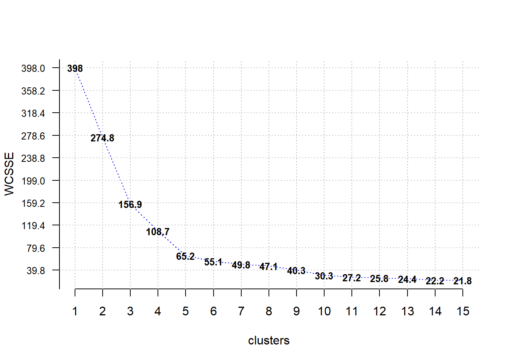

library(tidyverse)
klienci <- read.csv("data/klienci.csv")
ggplot(klienci, aes(x=wiek, y=roczny_dochod)) +
geom_point()
Grupowanie polega na przypisanie obiektów do określonych grup/klastrów/skupień/segmentów, w których znajdą się jednostki najbardziej do siebie podobne, a powstałe grupy będą się między sobą różnić. Całe utrudnienie polega na tym, że nie wiemy ile tych grup ma powstać.
Najpopularniejszą metodą grupowania jest metoda k-średnich. Do jej zalet należy zaliczyć to, że dobrze działa zarówno na małych, jak i dużych zbiorach i jest bardzo efektywny - zwykle osiąga zbieżność w mniej niż 10 iteracjach. Z wad należy wskazać losowy wybór początkowych centrów skupień, co może skutkować nieprawidłowym przypisaniem obiektów do grup.
Algorytm postępowania jest następujący:
Wykorzystamy informacje ze zbioru zawierającego informacje o klientach sklepu i dokonamy grupowania tych klientów.
Opis zbioru:
Wczytujemy zbiór danych i sprawdzamy czy pomiędzy zmiennymi są widoczne jakieś zależności.
library(tidyverse)
klienci <- read.csv("data/klienci.csv")
ggplot(klienci, aes(x=wiek, y=roczny_dochod)) +
geom_point()
Pomiędzy wiekiem a rocznym dochodem nie widać zależności.
ggplot(klienci, aes(x=wiek, y=wskaznik_wydatkow)) +
geom_point()
W przypadku wieku i wskaźnika wydatków moglibyśmy się pokusić o podział zbioru na dwie grupy za pomocą przekątnej.
ggplot(klienci, aes(x=wskaznik_wydatkow, y=roczny_dochod)) +
geom_point()
Po zestawieniu rocznego dochodu i wskaźnika wydatków wyłania się 5 potencjalnych grup, zatem te dwie cechy wykorzystamy do grupowania. Jednak przed zastosowaniem algorytmu musimy te dane przygotować normalizując zakres obu cech - w tym przypadku za pomocą standaryzacji.
klienci_z <- klienci %>%
select(roczny_dochod, wskaznik_wydatkow) %>%
scale()
head(klienci_z) roczny_dochod wskaznik_wydatkow
[1,] -1.734646 -0.4337131
[2,] -1.734646 1.1927111
[3,] -1.696572 -1.7116178
[4,] -1.696572 1.0378135
[5,] -1.658498 -0.3949887
[6,] -1.658498 0.9990891W przypadku, gdy podział na grupy nie jest tak oczywisty lub bierzemy pod uwagę więcej niż dwa kryteria to wówczas w wyznaczeniu optymalnej liczby skupień może pomóc wykres osypiska (ang. elbow method). Polega to na przeprowadzeniu grupowania (z wykorzystaniem funkcji kmeans()) dla różniej liczby grup i porównanie wariancji wewnątrz-grupowej. Dane do stworzenia wykresu osypiska możemy obliczyć w pętli:
zm_w_gr <- numeric(15)
# wprowadzenie pętli
for(i in 1:length(zm_w_gr)) {
set.seed(14)
gr <- kmeans(klienci_z, centers = i)
zm_w_gr[i] <- gr$tot.withinss
}
plot(1:15, zm_w_gr, type="b")
Wybieramy liczbę skupień po której nie następuje już gwałtowny spadek wartości wariancji wewnątrz-grupowej. Według tego kryterium powinniśmy wybrać wartość 6 zamiast 5. Sprawdźmy zatem jakie otrzymamy przyporządkowanie do grup. Następnie informację o tym przypisaniu umieszczamy w oryginalnym zbiorze danych i przedstawiamy na wykresie. W celu uzyskania powtarzalnych wyników zastosujemy stałe ziarno generatora.
set.seed(12)
grupy <- kmeans(x = klienci_z, centers = 5)
klienci$grupa <- as.factor(grupy$cluster)
ggplot(klienci, aes(x=wskaznik_wydatkow,
y=roczny_dochod,
color=grupa)) +
geom_point()Jak zauważamy ten podział nie jest właściwy. Ze względu na losowy przydział centrów skupień na początku algorytmu istnieje spora szansa, że rozwiązanie nie będzie optymalne. Rozwiązaniem tego problemu jest użycie algorytmu kmeans++ do początkowego ustalenia centrów. Ta metoda jest zaimplementowana w pakiecie ClusterR. Ponadto jest tam także funkcja do ustalenia optymalnej liczby skupień na podstawie wykresu osypiska.
library(ClusterR)
Optimal_Clusters_KMeans(data = klienci_z, max_clusters = 15, criterion = "WCSSE")
[1] 398.00000 274.82588 156.91549 108.68209 65.24057 55.10046 49.76380
[8] 47.09658 40.30544 30.31240 27.17200 25.79340 24.41910 22.23143
[15] 21.81531Wybieramy liczbę skupień po której nie następuje już gwałtowny spadek wartości wariancji wewnątrz-grupowej. W analizowanym przypadku będzie to 5 grup.
Dodatkowo można obliczyć jedno z wielu kryteriów dobroci podziału obiektów na grupy. Jednym z najpopularniejszych jest kryterium Calińskiego-Harabasza zaimplementowane m.in. w pakiecie clusterCrit. Podobnie jak w przypadku wykresu osypiska należy policzyć wartość tego kryterium dla różnej liczby segemntów i wybrać liczbę grup wskazaną przez wartość maksymalną.
library(clusterCrit)
kryt_ch <- numeric(15)
for(i in 1:length(kryt_ch)) {
gr <- KMeans_rcpp(klienci_z, clusters = i)
kryt_ch[i] <- intCriteria(traj = klienci_z, part = as.integer(gr$clusters), crit = "cal")
}
plot(1:15, kryt_ch, type="b")Najwyższe wartości indeksu Calińskiego-Harabasza obserwujemy dla 5 i 9 skupień. Należy jednak pamiętać, że w grupowaniu bardzo ważna jest ocena badacza pod kątem sensowności otrzymanego podziału - łatwiej stworzyć 5 różnych kampanii reklamowych aniżeli 9.
Następnie korzystamy z funkcji KMeans_rcpp do wyznaczenia przynależności do grup. Ta funkcja domyślnie korzysta z algorytmu kmeans++, zatem nie ma niebezpieczeństwa, że uzyskamy niewłaściwe przyporządkowanie.
grupy2 <- KMeans_rcpp(data = klienci_z, clusters = 5)
klienci$grupa2 <- as.factor(grupy2$clusters)
ggplot(klienci, aes(x=wskaznik_wydatkow,
y=roczny_dochod,
color=grupa2)) +
geom_point()Ostatnim etapem analizy jest odpowiednia charakterystyka uzyskanych klastrów - najczęściej wyznacza się średnie wartości cech w ramach każdej grupy.
klienci %>%
select(-klientID, -plec, -grupa) %>%
group_by(grupa2) %>%
summarise_all(.funs = "mean")# A tibble: 5 × 4
grupa2 wiek roczny_dochod wskaznik_wydatkow
<fct> <dbl> <dbl> <dbl>
1 1 25.3 25.7 79.4
2 2 32.7 86.5 82.1
3 3 41.1 88.2 17.1
4 4 42.7 55.3 49.5
5 5 45.2 26.3 20.9W grupie pierwszej znalazły się osoby z niskimi dochodami i wysokim wskaźnikiem wydatków. Grupa druga to klienci o niskich dochodach i wydatkach - ich przeciwieństwem jest grupa 4. W grupie 3 są osoby z wysokimi dochodami, ale niskimi wydatkami. Grupa 5 to z kolei średniacy - klienci o średnich dochodach i wydatkach.
Alternatywną metodą grupowania jest metoda hierarchiczna. Do jej zalet zaliczymy prosty sposób ustalenia liczby grup oraz praktyczny sposób wizualizacji. Niestety nie jest to metoda odpowiednia dla dużych zbiorów danych.
Algorytm postępowania:
Dla tych samych danych przeprowadzimy grupowanie, ale tym razem metodą hierarchiczną. W metodzie hierarchicznej bazuje się na macierzy odległości pomiędzy obserwacjami. Można zastosować wiele miar odległości, ale najczęściej wykorzystywana jest odległość euklidesowa. Druga zmienna, na którą mamy wpływ to metoda łączenia skupień - w tym przypadku najlepsze rezultaty daje metoda Warda. Z kolei wyniki grupowania metodą hierarchiczną są prezentowane na dendrogramie.
macierz_odl <- dist(klienci_z)
dendrogram <- hclust(macierz_odl, method = "ward.D")
plot(dendrogram, xlab="Klienci", ylab="Odległość euklidesowa")
Na podstawie dendrogramu identyfikujemy największe różnice odległości opisane na osi Y. Także w tym przypadku identyfikujemy 5 grup. Istnieje także wiele kryteriów, które mają na celu wyznaczyć optymalną liczbę grup - link.
plot(dendrogram, xlab="Klienci", ylab="Odległość euklidesowa")
rect.hclust(dendrogram, k=5, border="red")
Następnie dopisujemy do oryginalnego zbioru danych etykiety utworzonych grup.
grupy_dendro <- cutree(dendrogram, 5)
klienci$grupa3 <- as.factor(grupy_dendro)
ggplot(klienci, aes(x=wskaznik_wydatkow,
y=roczny_dochod,
color=grupa3)) +
geom_point()
Uzyskane wyniki są bardzo zbliżone do tych otrzymanych za pomocą algorytmu k-średnich.
klienci %>%
select(-klientID, -plec, -grupa, -grupa2) %>%
group_by(grupa3) %>%
summarise_all(.funs = "mean")# A tibble: 5 × 4
grupa3 wiek roczny_dochod wskaznik_wydatkow
<fct> <dbl> <dbl> <dbl>
1 1 45.2 26.3 20.9
2 2 25.3 25.1 80.0
3 3 42.5 55.8 49.1
4 4 32.7 86.5 82.1
5 5 41 89.4 15.6Metoda hierarchiczna zastosowała inną numerację grup. Liczebności tych grup nieznacznie się różnią, ale charakterystyki wewnątrz grupowe są bardzo podobne do tych określonych na podstawie metody k-średnich.
Tworząc tabelę krzyżową możemy zobaczyć, że tylko 4 obserwacje zmieniły przypisanie do grup.
table(klienci$grupa2, klienci$grupa3)
1 2 3 4 5
1 0 21 1 0 0
2 0 0 0 39 0
3 0 0 3 0 32
4 0 0 81 0 0
5 23 0 0 0 0Porównajmy jeszcze wyniki działania tych dwóch metod na wykresach:
klienci %>%
select(roczny_dochod, wskaznik_wydatkow, grupa2, grupa3) %>%
gather(metoda, grupa, -roczny_dochod, -wskaznik_wydatkow) %>%
ggplot(aes(x=wskaznik_wydatkow, y=roczny_dochod)) +
geom_point(aes(color=grupa)) +
facet_wrap(~ metoda)Problematyczne obserwacje pochodziły z grupy klientów o przeciętnych dochodach oraz wydatkach.
Dokonaj grupowania danych dotyczących 32 samochodów według następujących zmiennych: pojemność, przebieg, lata oraz cena.
Rozpoznawanie czynności na podstawie danych z przyspieszeniomierza w telefonie: User Identification From Walking Activity Data Set